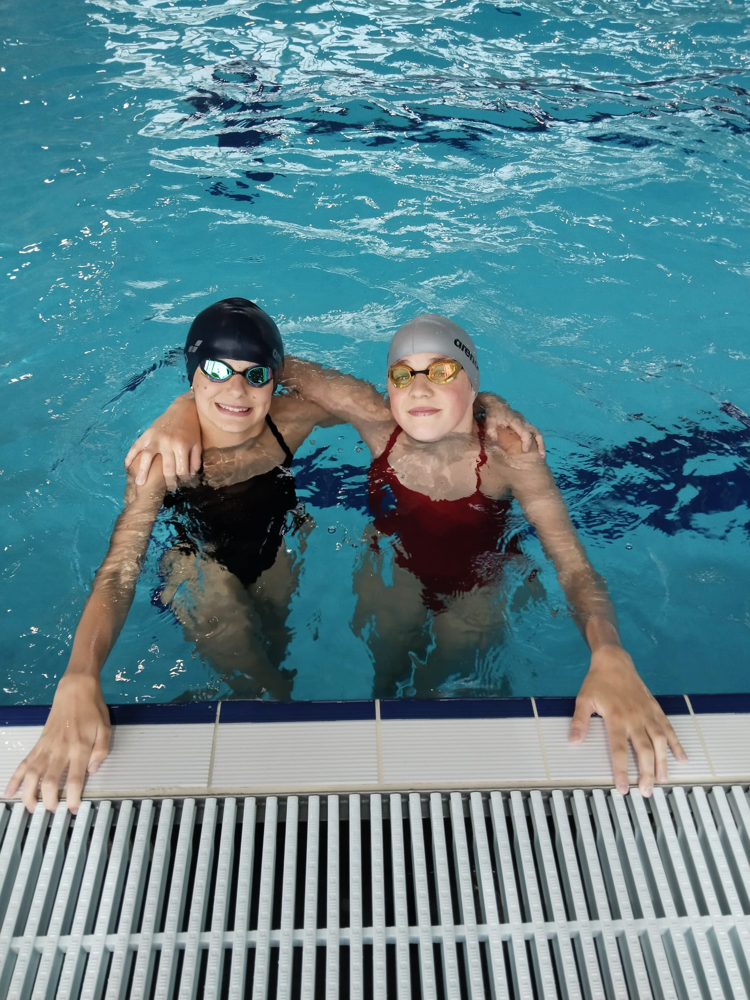

Provoz našeho oddílu by nebyl možný bez podpory těchto institucí a organizací. Jejich pomoc umožňuje našim plavcům trénovat, závodit a růst.
Dotace NSA – Můj klub 2026
Klub TJ Koh-I-Noor České Budějovice, z.s. obdržel od Národní sportovní agentury dotaci Můj klub 2026 ve výši 325 700 Kč. Finanční prostředky jsou určeny na podporu sportovních aktivit dětí a mládeže ve věku 4–19 let a na zabezpečení sportovní, tělovýchovné a organizační činnosti klubu. Díky této podpoře můžeme rozvíjet plavecké dovednosti, vytvářet kvalitní podmínky pro pravidelné tréninky i účast na závodech.
Dotace nám umožňuje udržet dostupné členské příspěvky, zajistit odborné trenéry, pronájem plaveckých drah a potřebné sportovní vybavení. Zároveň podporuje organizaci závodů, soustředění a dalších akcí, které motivují děti a mládež k dlouhodobému sportování.

Staňte se naším partnerem
Podpořte mladé plavce a zviditelněte svou firmu. Logo na klubovém oblečení, webu i při závodech.
Kontaktovat →